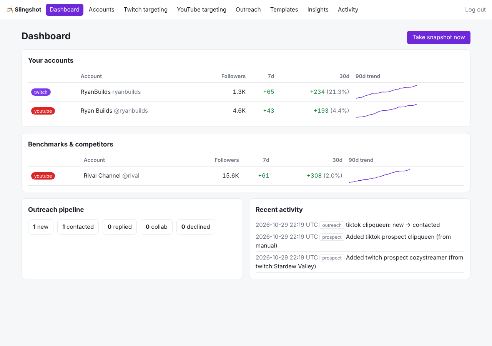

Grow on YouTube, Twitch and TikTok with numbers, not guesswork.
Social Slingshot is a self-hosted analytics dashboard for creators. It runs on your own computer, connects to each platform through its official API, and shows you how your channels are growing, when your posts do best, and which similar-size creators you could team up with.

Dashboard shown with demo data.
What it does
Growth tracking
Follower and view counts over time for your accounts and the creators you benchmark against, with 7-day and 30-day change.
Best time to post
A weekday-by-hour heatmap of how your own videos and streams perform compared with your typical upload.
Find your audience
Twitch categories where smaller streams still get viewers, and YouTube topics that are reaching beyond their channels' subscribers.
Collab partners
Creators in your size range, tracked in a simple outreach list with message drafts you send yourself.
How TikTok is used
When you choose Connect TikTok, you sign in on TikTok's own page and approve read-only access. Slingshot then reads your profile, follower, like and video counts, and your list of videos with their view, like, comment and share counts, to chart your growth and find your best posting times. It never posts, comments, follows, likes or messages on your behalf. You can disconnect at any time, which revokes access with TikTok.
Your data stays with you
Slingshot is software you run yourself. There is no Slingshot account and no Slingshot server: everything it reads is stored in a database file on your own computer. See the Privacy Policy for details.